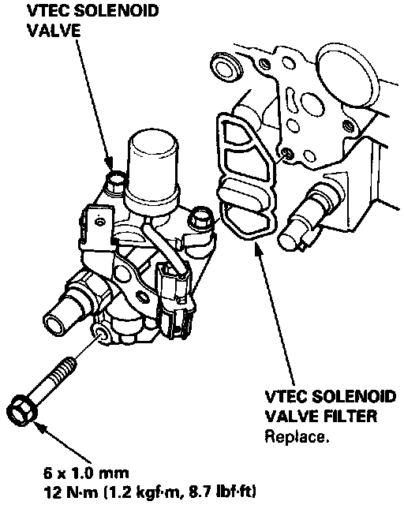

Solenoid Valve Assembly
VTEC Solenoid And Solenoid Valve Location:

REMOVAL
1. Turn off the ignition.
2. Disconnect the 2-wire connector from the solenoid.
3. Remove the 3 bolts attaching the solenoid to the cylinder head.
4. Remove the filter and O-ring.
5. Clean all mating surfaces before installing.
INSTALLATION
1. Install new O-ring and filter.
2. Align solenoid to cylinder head.
3. Torque solenoid assembly to 12 Nm (8.7 ft lb).
4. Re-connect the 2-wire connector to the solenoid.